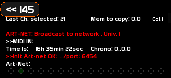
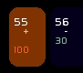
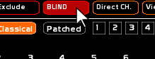
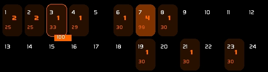
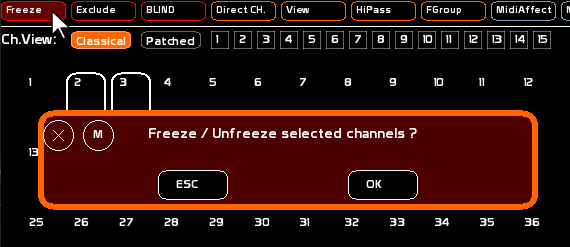
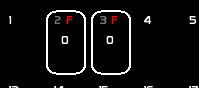
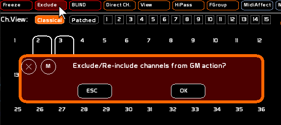
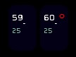

Que vous soyez en mode [Classical], [Patched] ou [Channel Views] toutes ces manipulations sont valables.
Pour sélectionner / désélectionner un circuit, cliquer dessus.
Cliquer, glisser pour sélectionner une série de circuits.
Sélection : Taper le numéro de circuit puis la touche [+].
Désélection : Taper le numéro de circuit puis la touche [-].
! noter que toute chaine de caractères en cours de frappe est affichée dans la fenêtre de retour d'infos. Ici **145**.
! noter que le circuit 21 a été appelé et est donc notifié : **Last Channel Selected: 21**.

Monter la molette de la souris. Si vous êtes en mode pourcentage, les circuits sélectionnés augmenteront de 1%. Si vous êtes en mode Dmx, ils augmenteront de 1 pas dmx.
Depuis la version 0.9, la molette est véloce : plus la molette tourne vite, plus le niveau change rapidement.
Taper l'intensité voulue puis la touche [ENTER].
! Raccourci clavier AT FULL : touche [I] ! Raccourci clavier AT ZERO : touche [O] Y penser comme ON / OFF ( I/O ) sur les interrupteurs ;-)
Taper l'intensité voulue puis cliquer [AT].
Cette roue de niveau se pilote en midi.
Vous pouvez désélectionner tous les circuits sélectionnés en une seule fois :
Cliquer [C] (même effet que [ESC])
Taper la touche d'échappement : [ESC]
Cette fonction est importante car elle nettoie aussi la chaine de commandes.
Les touches [GAUCHE] et [DROITE] permettent de sélectionner le circuit précédent, ou le circuit suivant.
[CTRL][GAUCHE] ou [CTRL][DROITE] envoient le circuit à Full.
Si la fenêtre de Patch est ouverte, les gradateurs affectés à ce circuit seront sélectionnés.
Sélectionner tous les circuits allumés
Cliquer [ALL].
Taper la touche [Y]
Sélection inversée : sélectionner tous les circuits allumés mais non sélectionnés
Cliquer [INV].
Taper la touche [U]
Sélection chainée : sélectionner une plage de circuits qui se suivent
Cliquer le premier circuit, puis glisser jusqu'au dernier :
toute la plage est sélectionnée.
Appelez et sélectionnez un circuit : [1][2] [+]
Tapez le numéro du dernier circuit de la sélection : [1][8] puis la touche [TAB]
Les circuits de 12 à 18 sont sélectionnés.
Faire un noir sec et tout désélectionner
Cette fonction est surtout utile pour nettoyer son espace circuit lors d'un encodage.
Taper [F12]
les circuits peuvent être copiés et collés sur scène ou en préset (mode BLIND, ou si on veut le buffer de la mémoire à venir)
sélectionner les circuits désirés
cliquer [COPY] pour copier en mémoire cliquer [PASTE] pour coller de la mémoire vers le buffer choisi ( sur scène, ou vers BLIND)
[CTRL][C] pour copier en mémoire
[CTRL][V] pour coller de la mémoire vers le buffer choisi ( sur scène, ou vers BLIND)
! Sur scène on peut copier en mémoire les valeurs des circuits appelées au clavier, mais aussi celles issues des Masters ( en orange).
! En Blind, seules les valeurs issues du Blind pourront être copiées en mémoire.
Sélectionner les circuits
Taper le numéro de mémoire
[CTRL][G]
Un circuit dont l'intensité va monter dans le BLIND se voit affecté d'un petit +. A l'inverse, un circuit dont l'intensité va descendre dans le preset se voit affecté d'un petit -.

le buffer BLIND
Accéder à BLIND : vous pouvez accéder en cliquant [BLIND] depuis les grandes commandes en haut à droite ou en tapant [CTRL-F11].

Le buffer BLIND est l'endroit où est stocké l'état de l'ensemble des circuits dans la mémoire à venir lors du prochain crossfade. On peut aussi l'appeler Preset.
C'est un espace où l'on peut manipuler, comme vu dans cette page, l'ensemble des circuits. Le résultat n'apparait pas sur scène, car il est fait dans le Preset, donc en aveugle.
Si vous ne travaillez pas avec le séquentiel, le buffer BLIND vous intéressera pour créer des masters en aveugle.
Il y a désormais deux pages de Patch :
Cliquer [VIEW] ou taper au clavier []

On peut voir sur l'image :
-en encadré le contenu du dernier dock survolé, avec son intensité en étiquette.
-que les circuits 1 et 2 sont contrôlés par le Master 2, les circuits 3,4,6,8,19,21,23 issus du Master 1, le circuit 7 issu du Master 4.
-View affiche quel Fader donne son plus haut niveau aux circuits.
! Un même circuit peut être contrôlé par différents Faders, seul le fader qui lui donne son niveau le plus haut sera affiché.
En tapant [F12]
Il est possible de bloquer à un niveau précis une sélection de circuits ( projecteur mal serré se détournant dans le public, erreur d'encodage, …).

Un circuit gelé apparait avec un petit F rouge, le niveau où il est gelé apparait en blanc.

On peut exclure de l'action du Grand Master une sélection de circuits ( changeurs de couleurs en concert, bleus, etc…).

Un circuit exclu du Grand Master apparait avec un petit cercle rouge en haut à droite.
